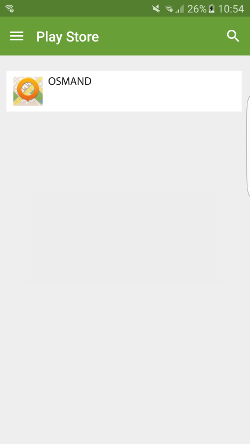
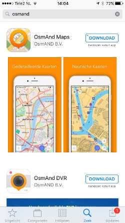
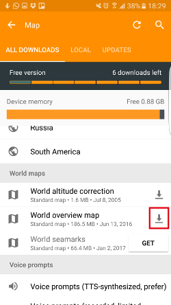

The OSMAND application
This tutorial aims to support you to make use of OpenStreetMap data in humanitarian response
Created by Charlotte Verweij
Click below to jump to a section
This guide is a quick-reference guide with many tips and tricks enabling you to start using the OSMAND app very quickly
Many of the tips given will hopefully be a good way to learn about how to use the application. So that you can use it by yourself
The OSMAND application
The tips here serve as a general guidance and depending on the context of usage may require a different approach.
Each page will provide a tip and a brief description. If you want to find out more about a particular tip then press down on your keyboard or swipe. Here you can find more information and links to resources providing further reading and learning materials.
Text here will indicate when you can press down
When navigating downwards the resulting pages will contain additional information and learning materials about the tip.
Before you use the application
Will you be collecting a lot of data?
Ask yourself: Will I be collecting a lot of data? If the answer is “no”, then this application should be used. But if the answer is “yes” then it’s advised to use an open data kit. For more information about the open data kit click here, or ask your attendant.
How many times it has to update?
The second question you need to ask yourself is: “How frequently will the application need to update?” If the update frequency is once per month, then you can use this application. If the update frequency is several times per hour as is the case for Haiti where we added thousands of buildings in the past week, then you have to use OSM live. Note, that costs are involved on a monthly basis in the order of 1.20 dollars.
Using GPS
If you want the application to use your current location, you will have to turn on the GPS functionality on your device. Note, that it is not required to use GPS. You can also just search for the location in the application.
GPS icon
Downloading the application
In the app store search for the app called OSMAND. After answering several questions, you can download the application.
 Extra editing
To edit OpenStreetMap (OSM), follow these instructions: instruction. In order to upload the data back into OSM you will need an OSM account. Credentials should be set in the application. You can make an OSM account here: made an account. If you want to use the data from your OSM account you will have to log-in in OSM. Select Plugins and then select OSM editing. Press the down-arrow button for more details.
First click on the menu shown in the bottom left corner of the screen. Search for the “Plugins” item and click it. Then scroll down and search for the “OSM editing” item. Press the down-arrow button for more details.


First you have to turn on the OSM editing by clicking on its icon. Then you have to click on the three dots and select the “option settings”. To use OSM, you will need to log-in with your OSM account.


Download the map
Going to the menu
In the bottom left corner of the screen you will find an icon with three lines. By clicking on that icon a menu will appear. The menu contains many options to select from.

downloading maps
One of the many options in the menu is to download maps. Click on the item “Download maps”.

Searching en downloading
Use the Search bar to search for your map. For now we are searching for Haiti. A number of search results will appear. Select the map of your interest by clicking on the arrow icon pointing downwards.

Going to OSM Live
First go back to the menu by clicking on the arrow shown on the top left of the screen. Then from the menu select the option “OSM Live”.

Adding the map
Now that we have downloaded the map, it’s time to add the map. Simply click on the ‘+ ‘ symbol in OSM Live. This will add the map. live. With doing that the map is there.

Viewing the map
Now that we have added the map, we can view the map. You will see that your downloaded map is shown in green. In order to view the world map, see the next step.

Downloading the world map
In order to view the world map, go back to the menu and click on “Download maps”. Scroll downwards until you find the item “World overview map”.

Using GPS
An easy way to find your location, is to turn on GPS on your smartphone. That will automatically indicate your location. In case you do not want to use GPS, then go to the next step.

Clicking and fixating the map
Another way to navigate is to go to your location. After locating that manually, click the location and do not move the map. Soon an orange marker will appear.

Clicking the blue arrow
You will find your location and are now ready to navigate by clicking on the blue arrow appearing in a white box.

Choosing your transport item
In order to navigate to a destination, select your means of transport.

Choosing from
The next step is to select your departure location. You can do this by clicking on the small arrow icon. Several different options are then presented to you. If GPS is turned on, you can select “my position”. In case no GPS is used, the options “select map” or “address” are shown.

Choosing to
The final step is to select your destination location. You can fill-in the address or select a location on the map.

add data to the map
OSM Editing
In case you have done this before you can skip this step and continue with the next step. Otherwise, go to the menu item icon, select item “Plugins” and then click on the icon for the item “OSM editing”.
Going to your map
First select the map you want to add the data to. Maybe it’s a map you downloaded previously. If you zoom in on the map you will be able to see more information about the map and its orange markers.

Clicking and fixating the map
First you have to look for the location where you want to add data to. You can use GPS for this, or simply search for it manually. After finding the location, don’t move the map. Soon an orange marker will appear.

Clicking on the three dots
When an orange marker appears, click on the three dots shown in the bottom right corner of the screen.

Clicking on create Point Of Interest (POI)
By clicking on the three dots a list of options will appear. Click on the item “Create POI”. If you don't have the option “Create POI”, press down.

In case the item “Create POI” is not listed, go back to the menu, click on “Plugins” and then click on “OSM editing”.
Giving the point a name
After clicking on the item “Create POI”, assign a name to the location. You will need to do this for each location that you add to the map.

Clicking on the advanced tab
It is important to add tags to your locations, so that all viewers know which locations were added by you. To do that first go to the “Advanced” tab, which is shown in the white bar of the screen.

Clicking on the add tag
Now you are in the “Advanced” tab. First click on “Add Tags” and then add your tags.

Filling-in in the tags
In this screen you can add tags. Tags have a name and a value. First enter a name and then a value. Examples of tags that are used in Haiti, are:

Importing points into OSM for easier navigation
Please follow these steps to learn how to import GPX files into OSMAND.
All steps completed
You have now completed all the necessary steps. Did you have any difficulty with any of the instructions? If not, great! If yes, then simply re-visit those sections and repeat the instructions.